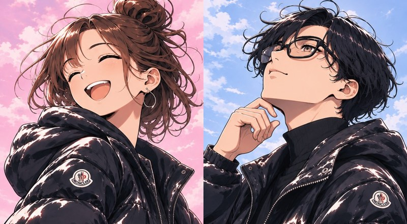
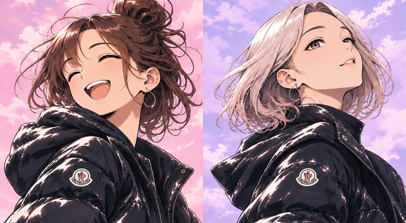
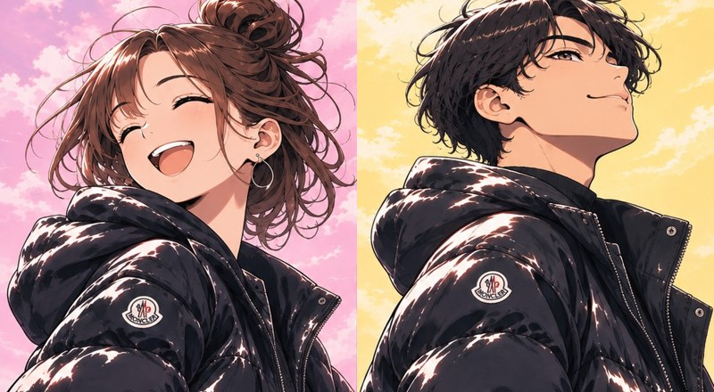
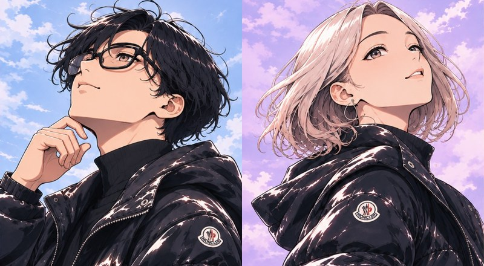
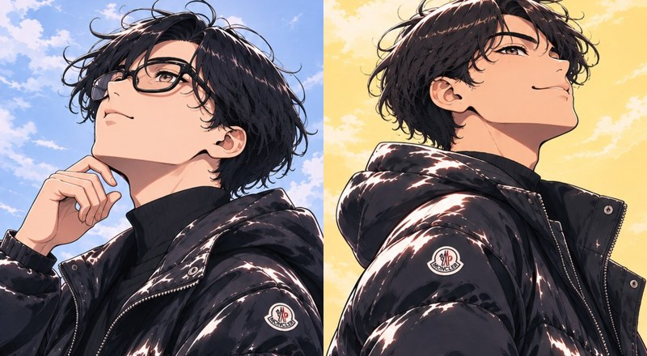
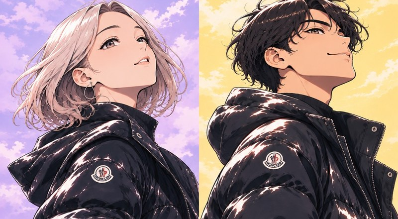

🧪 開発用テストモード
仮想スタッフの傾向を選んで診断結果を確認できます。通常のURLには表示されません。実際の妥当性を保証するものではありません。
TEAM TRAINING / PERSONALITY QUIZ
SALES DNA
接 客 ス タ イ ル 診 断
あなたの接客には、どんな個性がある？
接客の「正解」ではなく、あなたらしさを。
16の売場シーンで、普段の自分に近い選択肢を直感で選んでください。タイプ名は診断後に発表します。
全16問 · 約4〜5分
チーム内の相互理解を目的とした独自診断です。
能力や適性を判定するものではありません。
SALES DNA
正解はありません。普段の自分に最も近いものを選んでください。
YOUR SALES DNA
YOUR SPECIAL DNA
🧬 メインとサブのバランス
✨ 接客あるある
あなたの4タイプ傾向
各選択肢の得点を集計した割合です。タイプの優劣や能力値ではありません。
💡 強みと伸びしろ
🤝 あなたのベストパートナー
あなたのメイン×サブをもとに、接客で強みを補い合いやすいタイプを紹介します。
4タイプのペア相性図鑑
2人のキャラクターと、接客で補い合える強みを紹介。人間関係の優劣を表すものではありません。

CONNECTOR × ANALYST安心感 × 説得力会話で気持ちを引き出し、商品知識で納得を支える。

CONNECTOR × CURATOR共感 × 発見好みや気分をくみ取り、新しいスタイルを提案。

CONNECTOR × DRIVER信頼 × 判断不安を受け止め、優先順位を整理する。

ANALYST × CURATOR知識 × 感性商品の特徴とスタイリングを結びつける。

ANALYST × DRIVER分析 × 決断比較情報を整理し、納得の選択へつなげる。

CURATOR × DRIVER発想 × 実現選択肢を広げたうえで、理想の一着に絞る。
SHARE YOUR DNA
自分のDNAをチームに共有しよう
自分のタイプと「おすすめの相棒」が一緒に写ったカードをLINEグループへ。
※試作版。診断の科学的妥当性は検証されていません。
画像は提供されたデザインを元に使用しています。